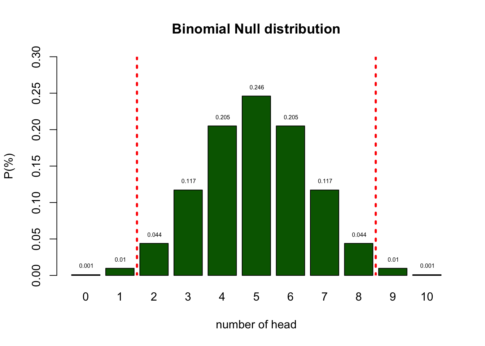

n = 10 # Sample size
k = 0:10 # Discrete probability space
p = .5 # Probability of headStatistical Reasoning
Null Hypothesis Testisn
Course structure
Course parts
- Lectures: On campus / Online / Video recording
- Preparatory Assignment: Submit in Testvision and Reflection in canvas
- Tutorials: For your support and in class assessment
- Exam: Knowledge and skills
in class assessment

Grading
\[\text{Final grade} = 0.9 \times \text{exam grade} + 0.1 \times \text{credit points}\]
- Exam
- Credits for
- Tutorial participation
- Preparatory assignment
Credits
You get 10 at the start of the course.
| Number of times missed | Deduction for TU | Deduction for PA |
|---|---|---|
| 1x | 0 | 0 |
| 2x | 0 | 2 |
| 3x | 2 | 3 |
| 4x | 4 | 4 |
| 5x or more | 5 | 5 |
See canvas for all the details.
Learning
Reasoning in statistics
Source: ARTIST
Statistical Literacy
- Knowledge (Basic understanding of concepts)
- Identify
- Describe
- Skils (Ability to work with statistical tools)
- Translate
- Interpret
- Read
- Compute
Statistical Reasoning
- Understanding
- Explain why
- Explain how
Statistical thinking
- Apply
- What methods to use in a specific situation
- Critique
- Comment and reflect on work of others
- Evaluate
- Assigning value to work
- Generalize
- What does variation mean in the large scheme of life
Empirical Cycle
By Adriaan de Groot
The components
- Observation
- Idea for hypothesis
- Induction
- General rule
- Hypothesis
- Deduction
- Expectation / Prediction
- Operationalization
- Testing
- Test hypothesis
- Compare data to prediction
- Evaluation
- Interpret results in terms of hypothesis
Explained by Annemarie Zandscholten
Experiment
Heads

bit.ly/2j54A2U
Emperical Cycle
- Observation Patiënt is showing post traumatic symptoms
- Induction Can we diagnose PTSD
- Deduction \(H_0\): P: fair coin → C: patiënt is balanced
- Deduction \(H_A\): P: Unfair coin → C: patiënt is unbalanced
- Deduction \(H_A\): P: data \(\neq\) EV → C: is unbalanced
- Testing Choose \(\alpha\) and Power
- Evaluation Make a decision
Null distribution
Let’s analyse the null distribution of the results.
Distributions
What is the difference between
- Population distribution
- Sample distribution
- Sampling distribution
Binomial distribution
\[ {n\choose k}p^k(1-p)^{n-k}\]
\[ {n\choose k} = \frac{n!}{k!(n-k)!} \]
With values:
Probabilities

Testing
I landed 2 times head. Can we conclude PTSD?
- As you can see from the distribution of healthy coins, we cannot conclude that by definition.
- What we can do is indicate how rare 2 is in a healthy population.
Testing
- Based on the null distribution we can see that the expected value (EV is 5.)
- We can now define the \(H_0\) hypothesis: \(H_0 = 5\)
- What is the alternative hypothesis?
- The alternative hypothesis describes a situation where PTSD is pressent.
- We could say that the alternative hypothesis is not 5.
- \(H_A \ne 5\)
- We could also formulate our \(H_0\) and \(H_A\) more abstract:
- \(H_0:\) the patient is balenced
- \(H_A:\) the patient is unbalenced
- What criterium should we use to conclude that one would be unbalenced?
- In the social sciences this \(\alpha\) criteria is often 5%.
- I tossed 2 times head. That is more frequent than 5%.
- Therefore, we conclude that our patient is probably healthy but we can never be sure.
- My coin could still be part of the unbalenced population.
Null distribution

End
Contact